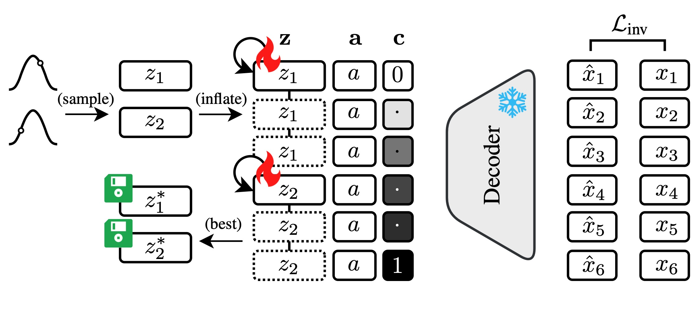

|  |
Guodong Ding, Rongyu Chen and Angela Yao
National University of Singapore
This work presents the first condensation approach for procedural video datasets used in temporal action segmentation. We propose a condensation framework that leverages generative prior learned from the dataset and network inversion to condense data into compact latent codes with significant storage reduced across temporal and channel aspects. Orthogonally, we propose sampling diverse and representative action sequences to minimize video-wise redundancy. Our evaluation on standard benchmarks demonstrates consistent effectiveness in condensing TAS datasets and achieving competitive performances. Specifically, on the Breakfast dataset, our approach reduces storage by over 500\(\times\) while retaining 83% of the performance compared to training with the full dataset. Furthermore, when applied to a downstream incremental learning task, it yields superior performance compared to the state-of-the-art.
Files: [pdf]
Poster: [pdf]
Citation:
@inproceedings{ding2025condensing,
title={Condensing Action Segmentation Datasets via Generative Network Inversion},
author={Ding, Guodong and Chen, Rongyu and Yao, Angela},
booktitle={Computer Vision and Pattern Recognition},
year={2025}
}